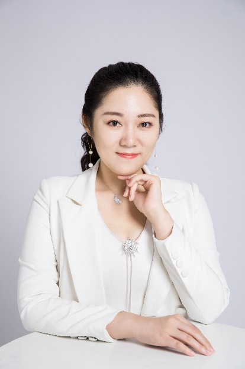
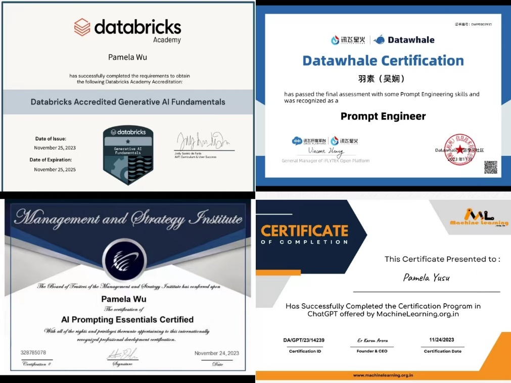

羽素老师课程及介绍
羽素老师背景介绍
| 身份与头衔 | 教育背景 |
|---|---|
|
|
AI智能医疗办公与科普创作
羽素老师在用AI赋能医学办公效率提升和科普创作领域有着丰富研究。2023年2月，她结合工作经历和对医疗单位的深度调研，组建并带领团队开展了系列备受好评的 AI时代必备的DeepSeek医疗办公职业运用课程 。这些课程涵盖了最新AI智能工具的应用，包括人工智能辅助写作、演示文稿智能制作和智能表格分析等。课程不仅介绍自然语言处理、机器学习等AI技术，更强调Deepseek、ChatGPT、豆包等AI模型与PPT、Excel、Word、思维导图等软件的实际使用案例，帮助学员在课程中学会运用，以更好地完成工作任务。
同时，羽素老师的AIGC医学科普创作课程，如AI视频剪辑、数字人医学科普运营，已覆盖全国各医疗单位 5000名学员 。
她的课程不仅仅是对传统软件的应用，更是对未来智能工具应用的探索，致力于帮助学员更好地适应未来的工作环境，通过AI智能工具的应用，更快速、高效地完成日常工作，提高办公效率和科普能力。
出版物
《完美呈现——PPT商务演示制作技能》 中国铁道出版社 2019.07
授课目录
- 《AI时代医疗行业能学会用：DeepSeek办公效能提升》
- 《AI赋能医疗卫生， 医务工作者提效进阶》
- 《AIGC赋能医学科普，让IP创作更轻松》
- 《医疗工作者的述职与汇报专项课程》
- 《医疗工作者的AI科研工作专项课程》
- 思维导图（结构性思维与图示制作）Ai赋能版本
- 完美呈现PPT（商务演示制作+演讲）Ai赋能版本
- 有理有数Excel（函数图表与数据分析）Ai赋能版本
- 文以载道Word（文书写作与文档处理）Ai赋能版本
AI相关证书

医疗行业授课机构（部分）
上海医疗单位
- 上海曙光大学附属龙华医院
- 上海交通大学附属第一人民医院
- 上海交通大学附属第六人民医院
- 上海卫健委
- 上海卫生人才服务中心
广东医疗单位
- 广东省医学会
- 南方健康传播
- 广州市第一人民医院
- 深圳卫健委
- 深圳市龙华区中心医院
- 禾正医院
- 龙岗二院
- 市卫健能教中心
- 宝安区妇幼保健院
- 福永人民医院
- 光明人民医院
- 市卫健能教中心
- 宝安公卫
- 宝安中医院
- 市疾控
- 葵涌人民医院
- 宝兴医院
- 龙华区妇幼保健院
- 龙岗区第五人民医院
- 深圳市职防院
- 宝安区妇幼保健院
- 松岗人民医院
- 南山区疾病预防控制中心
- 南澳人民医院
- 深圳机场股份有限公司机场门诊部
- 宝安区空海医院
- 坪山区人民医院
- 龙岗中医院
- 大鹏新区妇幼保健院
- 南山区妇幼保健院
- 大鹏新区疾病预防控制中心
- 深圳市蛇口人民医院
- 深圳市中西医结合医院
- 光明人民医院
- 龙岗区第六人民医院
- 市疾控
- 龙华疾控
部分授课照片分享
.jpeg)
.jpeg)
.jpeg)
.jpeg)
.jpeg)
.jpeg)